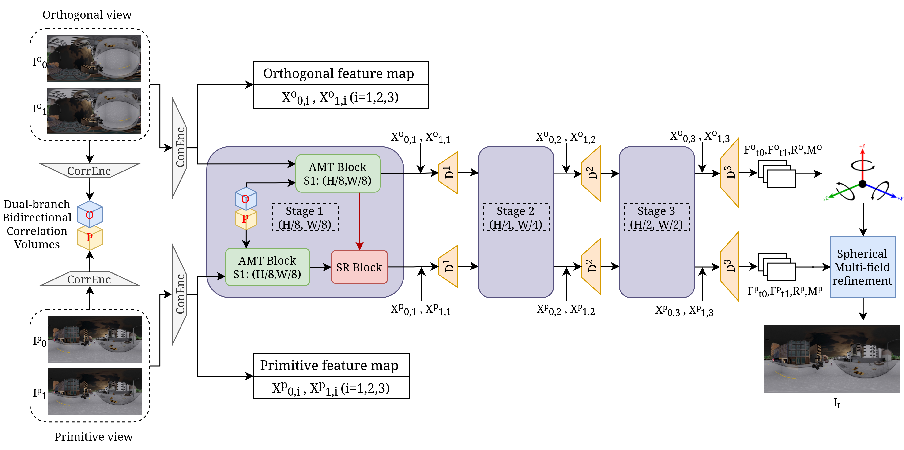

SVI360 is a video interpolation method specifically designed for spherical images. It effectively handles the inherent equirectangular distortion at the poles while maintaining high visual quality across the rest of the image.
Abstract
This paper addresses the problem of omnidirectional video interpolation, which plays an essential role in applications such as virtual reality and immersive video enhancement. Existing video interpolation methods are not well-suited for spherical videos, as they have difficulty handling severe distortions close to the poles. To address this issue, we propose SVI360, a dual-branch framework that combines the image frame and its rotated orthogonal view to deal with these distortions. The core methodological aspect of the approach is to reinforce equivariance of the flow displacements between the original and orthogonal views to improve intermediate frame prediction. Experiments show that our method outperforms state-of-the-art approaches in interpolation quality while maintaining accurate optical flow in four different public benchmarks.
Overview

Overview of SVI360. The primitive (original) spherical frame and its rotated orthogonal view are processed by separate encoders, which are then reconstructed with a three-stage coarse-to-fine decoder. Correlation volumes refine optical flow and intermediate features across stages, while the Spherical Refiner component transfers orthogonal cues to the primitive branch to correct distortions. Finally, the spherical multi-field refinement component fuses the outputs from the two branches to produce the final interpolated frame.
Qualitative Comparison
BibTeX
@misc{svi360,
title = {SVI360: Spherical Video Interpolation},
author = {Le-Kim Nguyen and Renato Martins and Pascal Vasseur and Cedric Demonceaux},
journal= {ECCV},
year = {2026}
}